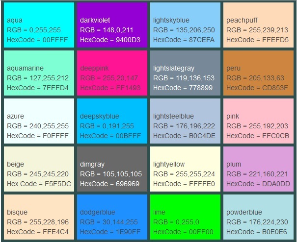

padding: 20px;
padding-top: 30px;
}

Padding: Es una etiqueta que se usa para definir una separacion alrededor de un contenidos.
Se puede establecer un padding lateral u horizontal con las propiedades:
padding-left padding-right padding-top y padding-bottom.
Se mide en pixeles o en porcentaje.
Ejemplo
div{
padding: 20px;
padding-top: 30px;
}
Margin: Establece de forma directa todos los margenes de un elemento.
Se pueden definir margenes laterales y horizontales de la misma manera que con padding.
Se mide en pixeles, porcentaje o em.
Ejemplo
div{
margin: 5%;
margin-left: 20px;
}

Border: Establece la anchura de todos los bordes del elemento.
Se pueden definir bordes laterales y horizontales de la misma manera de los demas parametros
Se mide en pixeles.
Ejemplo
div{
border: 2px;
border-left: 5px;
}

Background-color: Establece un color de fondo para los elementos.
El color se puede definir en hexadecimal o valores RGB.
Ejemplo
div{
background-color: #FF0000;
background-color: rgb(123,30,80);
}

width: Se utiliza para definir la anchura de un elemento.
Valores: px, cm y %.
Ejemplo: width: 40%/300px;
max-width: Establece la anchura maxima que puede tener un elemento.
Valores: pixeles.
Ejemplo: max-width: 400px;
heigth: Se utiliza para definir la altura de un elemento.
Valores: px, cm y %.
Ejemplo: heigth: 60%/600px;
max-heigth: Establece la altura maxima que puede tener un elemento.
Valores: pixeles.
Ejemplo: max-heigth: 700px;
Display: Es una propiedad que permite controlar estructuras segun el valor insertado.
Los mas comunes son;
display-none: Oculta un contenedor y su contenido.
display-block: Se estira y ocupa todo el espacio posible.
display-inline: Ocupa solo el espacio necesario para mostrar su contenido.
overflow: Controla el comportamiento de los contenidos que no caben en su elemento contenedor.
Solo se puede establecer un valor por cada contenedor.
El mas comun es overflow: auto
Si el contenido cabe dentro del elemento, no se muestra ninguna barra de scroll.
Si el contenido se sale por un lado, sólo se muestra la barra de scroll de ese
lado (horizontal o vertical). Si el contenido se sale por todos los lados,
se muestran las dos barras de scroll.